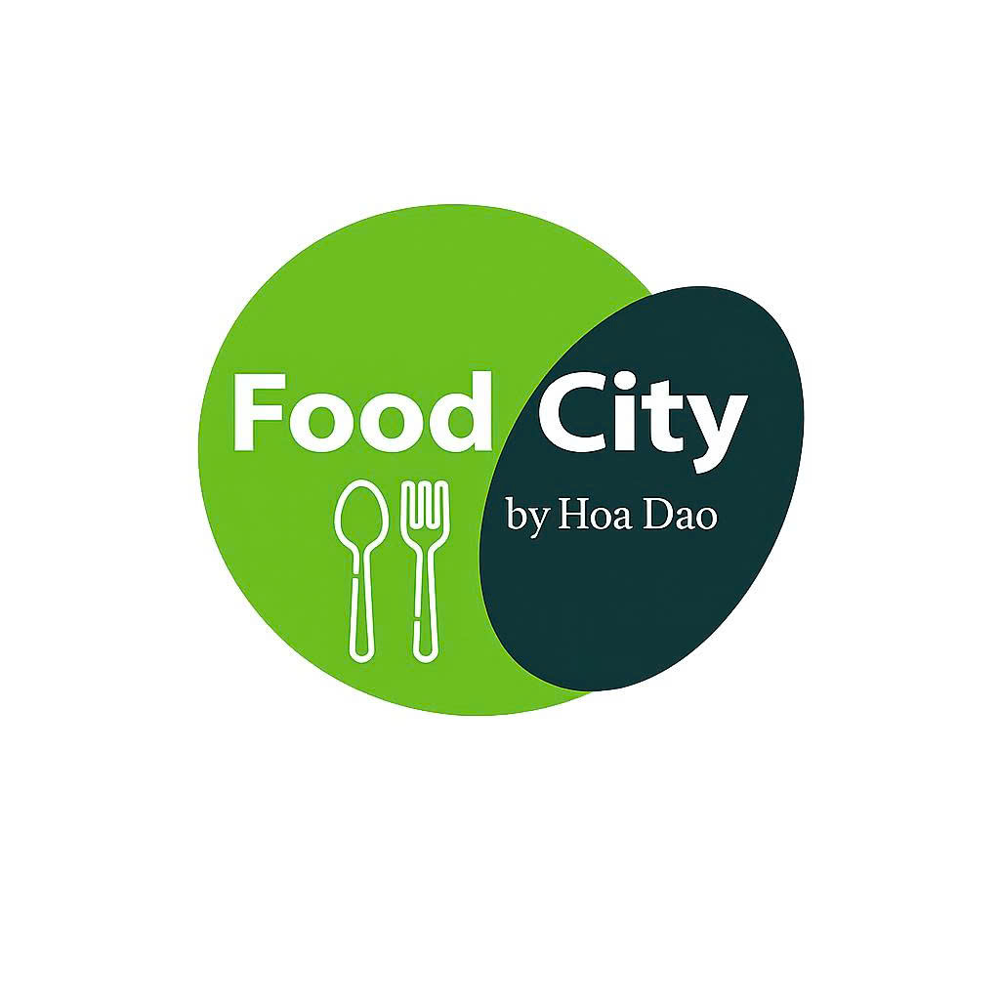
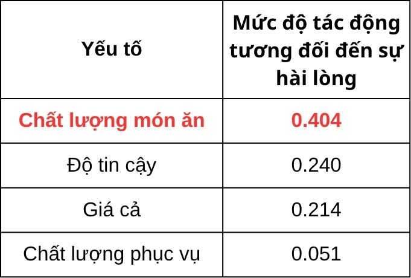
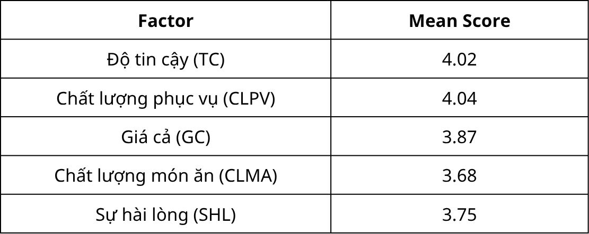
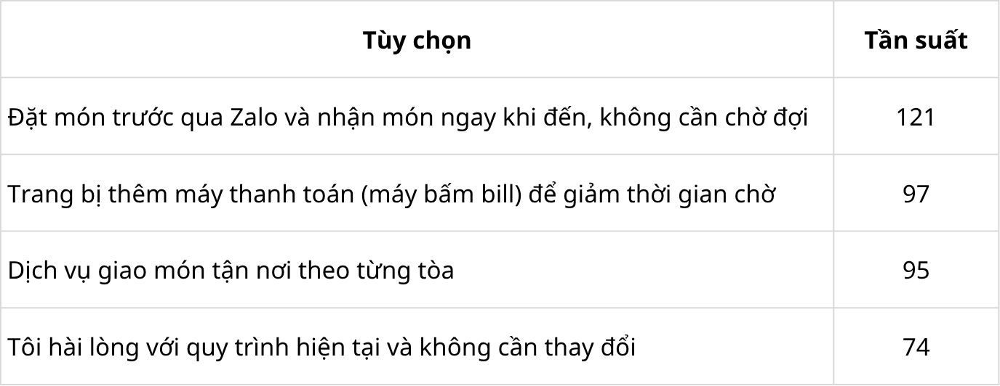
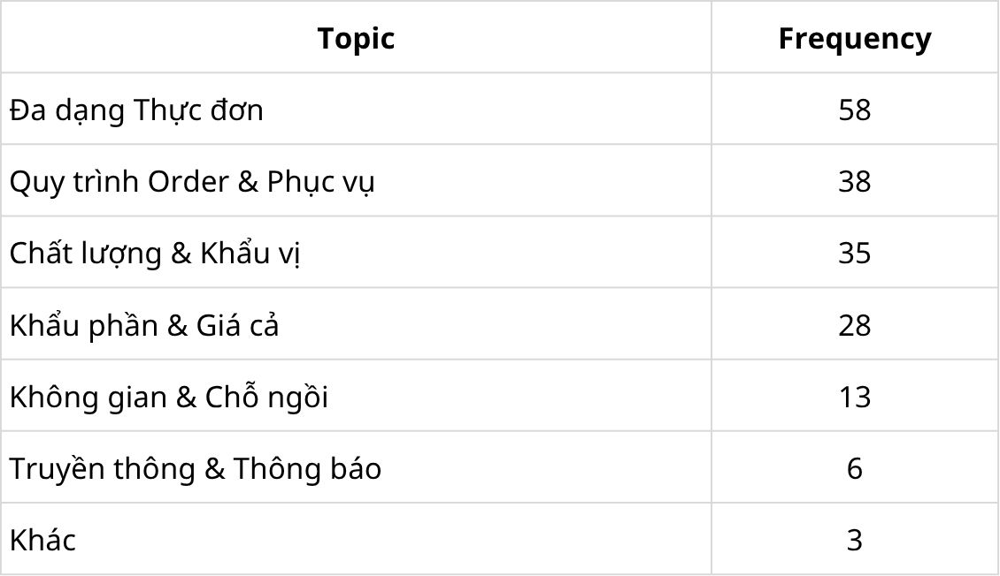
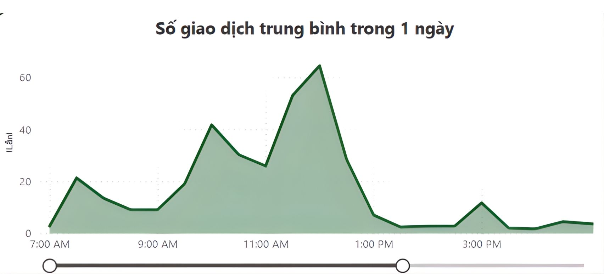
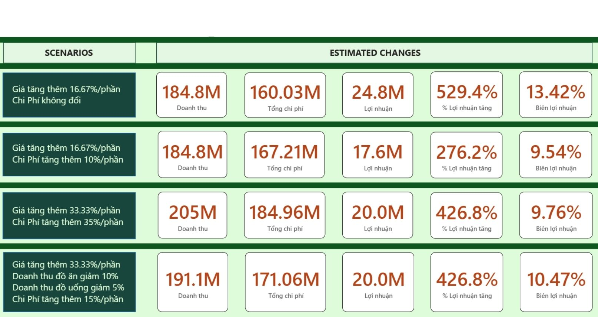

Data driven Data Analyst with hands on experience in SQL, Power BI, Python, and Excel.
Passionate about turning complex datasets into clear insights that support smarter business decisions.
I am a Business Analytics student with a strong interest in data analysis, dashboard development,
and business problem solving. I enjoy working with data to uncover patterns, generate insights,
and support decision making through clear and practical reporting.
Industry 4.0 Innovation Center (IIC 4.0) | Jul 2025 - Sep 2025
Researched international KPI standards on electricity usage for monitoring and optimization.
Recommended relevant data collection to identify classrooms exceeding electricity thresholds.
Built a real time Power BI dashboard to visualize and monitor energy consumption.
Collaborated on HVAC SOP development for the Sustainable Building Management System.
Helped define inter department protocols for efficient issue handling during system malfunctions.
Projects
Gaining More Customers and Competitiveness for a Food Start Up
FoodCity Capstone Project | Strategic Business Analytics | Feb 2026

End to end analytics project for a university based Vietnamese food and beverage start up focused on
customer satisfaction, operational pressure during peak hours, and low profit margin despite strong traffic.
Data AnalystSmartPLSPythonExcelPower BI
Data Bank SQL Challenge
Business Data Management | Aug 2025
Developed advanced SQL queries to solve analytical business questions.
Used CTEs and Window Functions to improve query structure and efficiency.
Enhanced data processing workflow through optimized query design.
Human Resource Dashboard
Data Visualization | Jun 2025
Applied DAX functions for accurate calculations and KPI analysis.
Built interactive dashboards showing employee distribution and workforce performance.
Analyzed turnover trends by year, age group, and department.
Education
Eastern International University (EIU)
Bachelor of Business Administration - Business Analytics | Expected Mar 2026
Gaining More Customers and Competitiveness for a Food Start-Up
FoodCity is a Vietnamese style food and beverage brand inside a university campus. The business offers
clean, hygienic, delicious, and affordable meals for students and staff, but customer traffic declines over time
after each new student cohort arrives. At the same time, transaction volume remains high while profit stays very thin.
Role: Data AnalystTools: SmartPLS, Python, Excel, Power BI
Project Objectives
Assess customer satisfaction and explore preferences and expectations among students for FoodCity.
Optimize cost structure and profitability for the business.
Business Context
The vendor serves a price sensitive student market. FoodCity experiences strong peak traffic and temporary demand spikes,
but repeat traffic drops later. This created a clear need to improve both customer experience and economic sustainability.
63.1%Students are willing to spend 30K to 50K VND per meal
11:00 - 12:00Most intense daily peak hour with the highest service pressure
~3%Base profit margin at 30K per portion before the new pricing scenario
Key Findings
1. Customer budget range supports a slightly higher price point
Only 29.0% of students preferred meals at or below 30K VND, while 63.1% were comfortable with the 30K to 50K VND range.
This indicated room for a pricing adjustment without immediately moving outside the main affordability zone.
2. Food quality is the strongest driver of satisfaction, but also the weakest rated factor
Food quality had the largest relative impact on satisfaction at 0.404, but its mean score was 3.68, which was lower than service quality,
reliability, and price. This showed the most important factor was also the biggest improvement opportunity.
3. Customers want more convenience and a better ordering flow
Improvement expectations clearly pointed to pre ordering via Zalo OA with 121 responses, building level delivery with 95 responses,
and only 74 responses saying the current process was already satisfactory.
4. Menu variety matters for repeat visits
In open ended feedback, the most frequent theme was menu variety with 58 responses, followed by order and service process,
food quality and taste, then portion size and pricing. This suggested freshness in menu design was important for maintaining demand over time.
5. Peak hour congestion hurts both customers and staff
The transaction chart showed that 11:00 to 12:00 was the most stressful part of the day. A large number of customers arrived within a narrow time window,
creating waiting pressure, staff fatigue, and a weaker service experience.
6. Thin margin limited reinvestment into product quality
The original 30K per portion setup generated a very thin margin, which made it harder for the business to reinvest in food quality,
ingredients, and a more sustainable operating model.
Project Evidence Gallery

Food quality had the strongest relative impact on customer satisfaction at 0.404.

Despite its importance, food quality had the lowest mean score among the main drivers.

Students strongly preferred Zalo pre ordering, faster payment, and building level delivery.

Menu variety and a smoother ordering process were the most common qualitative expectations.

The business experienced the highest operational pressure between 11:00 and 12:00.

Scenario analysis showed a strong margin improvement when price was adjusted and costs were controlled.
Strategic Recommendations
1. Restart the Zalo OA and Zalo group ordering model
Rebuild the process around pre ordering, quick ticket pickup through a scanner station, and delivery by building when orders are confirmed before 10:30.
This directly addresses peak hour congestion and improves convenience for students.
2. Increase the price to 35K or 40K per portion based on scenario analysis
The team recommended a price adjustment supported by affordability data and scenario modeling, rather than relying on traffic volume alone.
3. Improve food quality, ingredient input, and menu rotation
Since food quality had the strongest effect on satisfaction, investment in better ingredients and a more diverse rotating menu was essential
to make the brand feel fresher and encourage repeat purchase.
Outcome
The company selected Scenario 1. After implementation, profit margin increased by 10 percentage points, customer usage increased,
and satisfaction with the service improved. This project demonstrates how combining customer insight, operational analysis, and scenario simulation
can guide practical decisions for a growing food business.